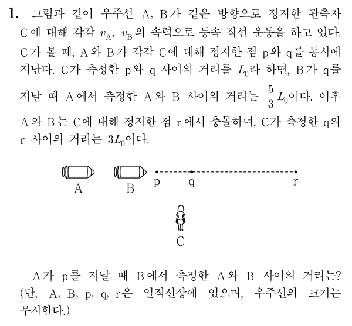
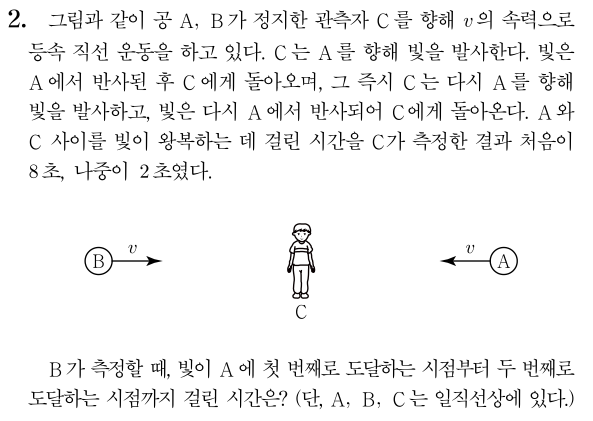

개요
본 문서에 대해
본 사이트는 장문의 칼럼을 마크다운 형식으로 작성해보면 어떨까 하는 마음에서 시범 차원으로 작성한 문서입니다. 2019년에 제가 작성했던 이 칼럼의 내용을 그대로 가져왔습니다.
마크다운으로 칼럼을 작성할 때
아래 내용은 마크다운으로 칼럼을 작성하는 것에 대한 튜토리얼이 아닌, 특징 나열입니다. 튜토리얼은 반응이 괜찮으면 작성해볼 생각입니다. 아니면 저만 쓰겠습니다 ㅎㅎ
마크다운이란 (간략하게)
마크다운은 지금 보고 계시는 화면과 같이 하나의 글을 일정한 양식으로 작성할 때 사용하는 방식 중 하나입니다. 문법이 간편하고, 글의 내용을 작성하면 외부에서 따로 설정한 테마에 맞게 알아서 깔끔하게 글이 만들어지기 때문에, 많은 사이트에서 편집 양식으로 지원하기도 합니다.
자세한 내용은 구글에 검색하면 쏟아지므로, 구글에 마크다운을 검색해보는 것을 추천드립니다.
마크다운을 사용할 때의 장점
네이버 카페나 MS워드, 아래아한글 등을 사용해서 문서를 작성할 때엔 글의 양식을 그때그때 지정해줘야 합니다. 즉 글을 작성하는데 글이 어떻게 보이는지 계속 신경쓰면서 테마를 건드려줘야 하는 것이죠.
마크다운은 글의 내용만을 지정하며, 테마는 외부에서 따로 설정합니다. 따라서, 글만 작성하면 테마는 자동으로 설정됩니다. 때문에 글이 어떻게 보이는지에 집중하기보다 글의 내용에 더 집중할 수 있어 편리합니다. 테마 설정의 경우 마크다운 자체가 이미 매우 널리 쓰이는 포맷이기 때문에, 외부 서비스를 적절히 적용하면 알아서 글이 깔끔하게 나옵니다. 지금 보시는 사이트도 기본적인 설정만 해놓고 글만 작성하고 있습니다.
또한, 여러 글을 묶을 때에도 편리합니다. 여러 마크다운 파일을 이 사이트와 같이 "책"처럼 묶어주는 서비스는 많습니다. 때문에 칼럼 시리즈를 연재하거나, 자작문항을 카테고리별로 묶거나, 모의고사의 해설을 개제할 때에 편리합니다. 인터넷에 올리기도 간편하여 공유하기도 쉽습니다.
단원 설정, 수식 입력 등을 전부 타이핑으로 해결하기 때문에, 아래아한글이나 MS워드에서 수식 입력을 위해 부단히 마우스를 놀리는 게 마음에 안 든다면 마크다운을 잡아보는 것도 좋습니다. 마크다운은 모든 내용이 텍스트 파일로 결정되기 때문에 많은 것을 타이핑으로 해결합니다.
본 사이트의 방식
본 사이트는 mdbook이라는 서비스를 이용하고 있습니다. 마크다운은 지금 보시는 하나의 화면과 같이, 하나의 게시글과 같은 글만을 나타내며, mdbook은 여러 개의 마크다운 파일을 하나의 책처럼 단원별로 묶어주는 역할을 합니다.
mdbook 이외에도 이와 같은 서비스가 여럿 있습니다. 사실 이러한 목적으로 가장 많이 사용되는 것은 GitBook인 것 같습니다. 어느쪽을 사용하는지는 취향 차이인 것 같습니다.
개별 마크다운 파일의 개제
이 사이트처럼 여러 마크다운을 모은 것이 아닌, 개별 마크다운 파일 형식의 경우 티스토리와 같은 블로그를 사용하거나, 이 글에서 설명하는 것처럼 html 형식으로 변환하여 네이버 카페 등에 글을 작성할 수도 있어 보입니다.
시작하기에 앞서
시작하기에 앞서, 본 칼럼은 물리I 내용을 담고 있긴 하지만, 수능 대비를 위한 것은 아닙니다. 많은 사설 문제집은 동시성의 상대성을 활용한 과한 난이도의 특수 상대성 이론 문제를 포함합니다. 이 칼럼에서 소개하는 도구는 이러한 문제들도 풀어내는 데에 큰 도움을 주지만, 본 칼럼은 그보다는 정성적으로 비교할 수밖에 없던 상황 및 기존의 과하게 어려운 문제에서 나올 법한 상황을 정량적으로 분석하는 것에 집중합니다. 아시다시피 현재까지 수능에서 정량적인 계산을 요구하는 특수 상대성 이론 문제는 출제되지 않았으며, 앞으로도 될 가능성은 거의 없습니다. 따라서 이 칼럼은, 동시성의 상대성을 사용해서 난이도를 높인 문제를 푸는 데에는 어느정도 도움이 되겠지만, 그 길이에 비해서 수능에 직접적으로 도움이 되는 정도는 매우 낮다고 할 수 있습니다. 이 점 유의하여 주시기 바랍니다.
만약 이 칼럼에서부터 그러한 과한 문제들을 푸는 법을 얻어가고 싶으시다면, 계산 부분은 생략하시고 양방 광원의 개념과 대략적인 활용 방법만 읽어 주시기 바랍니다. 그게 아니라 상대성 이론에 대해서 그저 더 알고 싶고, 이를 고등학교 수준에서 해결하고 싶으신 분들은 모든 내용을 읽으셔도 좋다고 봅니다.
2022년 추가
해당 글은 2019년에 작성된 글로써, 현재 물리I 교육과정이 어떻게 되어있는지 저는 모릅니다. 상대성 이론이 아예 빠졌는지, 요즘 문제가 더 쉬워졌는지 어쨌는지 딱히 알아보지 않았습니다. 때문에, 이 칼럼에서 설명하는 내용이 지금의 수능판과는 잘 맞지 않을 수 있습니다. 다만 내용 자체는 여전히 사실입니다.
만능 측정 장치, 빛
개요
특수 상대성 이론은 우리의 상식을 벗어나는 현상들을 다룹니다. 빨리 움직였더니 주변 시간이 느리게 흘러가지를 않나, 막대기를 빠르게 던졌더니 길이가 짧아지지를 않나, 그런 식으로 말이죠. 이와 같은 생소함이 우리가 특수 상대성 이론을 제대로 이해하는 것을 방해합니다. 하지만 이러한 이상한 상황 속에서도 변하지 않는 것이 있습니다. 변하지 않는 양, 즉 ‘불변량’은 복잡한 이론이나 현상을 설명할 때 우리를 편하게 해줍니다. 즉, 복잡한 상황을 그러한 ‘불변량’을 통해서 ‘측정’하는 겁니다.
특수 상대성 이론에서 사용되는 가정은 단 두 가지입니다. ‘모든 관성계는 동등하다’와 ‘빛의 속력은 언제나 일정하다’입니다. 여기서 광속이 일정하다는 가정은 빛을 복잡한 상황을 해석하는 데에 쓰이는 강력한 측정 도구로써 작용하게 됩니다. 에너지 보존 법칙 등 일정하게 유지되는 양은 우리가 다루기 쉽기 때문이죠. 이미 교과서에서도 이러한 빛의 성질을 사용해서 시간 팽창과 길이 수축을 ‘정량적으로’ 유도하기도 했듯이, 빛은 여러 복잡한 상황을 ‘정량적으로’ 분석하는 데에 도움을 줍니다.
본 칼럼에서는, 이 빛을 시간 팽창과 길이 수축을 유도하는 것뿐이 아니라 임의의 두 사건을 여러 좌표계에서 측정했을 때 어떤 결과가 나올 것인지 정성적으로나 정량적으로나 분석할 수 있는 강력한 도구인 ‘양방 광원’에 대해 소개하고 이를 활용하는 방법을 알아보고자 합니다. 실제 평가원 시험에서는 굳이 이러한 도구를 사용할 필요는 없는 간단한 수준의 문제만이 나오지만, 양방 광원은 특수 상대성 이론을 고등학교 수준에서 좀 더 심도 있게 이해하고 자유롭게 활용할 수 있도록 도움을 줄 것입니다.
우선 특수 상대성 이론 자체를 이해하기 위해 꼭 잘 알아야 하는 시공간, 사건, 측정에 대해 간략히 설명한 다음, 양방 광원이 등장하는 ‘동시성의 상대성’에 대한 유도를 알아보고, 이를 정량적으로 분석하고자 합니다. 그리고, 양방 광원을 시간 팽창과 길이 수축을 동시에 활용해서 여러 상황에 적용하는 방법을 설명한 후 몇몇 예제를 통해서 양방 광원의 활용을 보여드리고자 합니다.
참고로 이 칼럼은 고유 시간의 의미와 같은 특수 상대성 이론의 기초는 모두 알고 있다는 가정 하에 작성되었습니다. 또한, 난이도가 낮지 않으니 이 점 유의해 주시기 바랍니다.
시공간, 사건, 그리고 측정
시공간은 기존에 우리의 눈 앞에 펼쳐진 3차원 공간에 시간 축을 추가한 4차원 초공간입니다. 이때 사건은 시공간 위의 한 점입니다. 예를 들어, \( (x, y, z) \)에서 시간 \(t\)에 어떤 사건이 발생했다면, 그 사건은 시공간 위의 한 점인 \( (x, y, z, t) \)입니다. 또한 시공간 위의 같은 점을 공유하는 두 사건은 하나의 같은 사건으로 간주할 수 있습니다.
측정은 어떤 사건의 시공간 위의 좌표를 확인하는 것을 말합니다. 공간의 측정은 단순히 관찰자의 좌표계에서 그 사건이 발생한 공간상의 좌표를 확인하는 것입니다. 시간의 측정은, 공간에 촘촘하게 배치된 무수히 많은 시계가 있을 때, 어떤 사건이 일어난 순간 그 사건의 공간 위치에 있는 시계가 가리키는 시간을 확인함으로써 이루어집니다.
정량적인 동시성의 상대성
교과서는 정량적인 계산 시간 팽창과 길이 수축을 유도할 때에만 다룹니다. 하지만 동시성의 상대성은 정량적인 계산을 배우지 않고 사실 위주로 공부하게 되죠. 이 장에서는 동시성의 상대성을 교과서의 유도 방법을 활용해서 정량적으로 유도하게 됩니다.

위 그림은 교과서에서 동시성의 상대성을 유도할 때 사용되는 상황입니다. 우선 기차 안의 관찰자가 보기에는 상황이 왼쪽의 그림과 같이 보입니다. 가운데 광원에서 양쪽으로 나간 빛이 각각 열차의 양쪽 끝에 도달한 것은 각각 하나의 사건이라고 할 수 있는데, 열차 안의 관찰자는 이 둘을 동시에 일어나는 것으로 측정합니다. 한편 열차 밖의 관찰자가 보기에는 상황이 오른쪽의 그림과 같이 보입니다. 열차 안의 관찰자에겐 동시에 일어나는 것으로 측정된 이 두 사건을 열차 밖의 관찰자는 다른 시간에 일어나는 것으로 측정합니다. 이것이 동시성의 상대성입니다. 교과서에서는 여기까지만 다루며, 수능에서도 간단한 상황에 대한 정성적인 분석만을 요구합니다.
한편 빛은 강력한 측정도구이기에, 이 현상을 같은 방법으로 정량적으로 설명할 수 있겠죠? 그럼 이제 동시성의 상대성을 정량적으로 분석해봅시다. 단, 길이 수축은 이미 알고 있다고 전제하겠습니다.
열차의 길이를 \(L=2l\), 속도를 \(v\)라고 둡시다. 그러면 열차 안의 관찰자에겐 두 사건 사이의 위치 차이는 열차의 운동 방향과 나란하게 \(L\)로 측정됩니다. 한편 열차 밖의 관찰자에겐 이 상황이 어떻게 보이는지 알아봅시다. 우선 광원에서 양쪽으로 빛이 발사되는 것은 열차 밖에서도 동시에 발사되는 것으로 측정됩니다. 각각의 방향으로 빛이 발사되는 두 사건은 시공간 위에서 같은 한 점으로 해석되므로 두 사건은 정확히 같은 것이기 때문입니다. 왼쪽으로 발사된 빛과 열차의 왼쪽 면이 가까워지는 속도는 \(c+v\)입니다.1 따라서 발사된 순간의 시간이 \(t=0\)이라면 빛이 열차의 왼쪽 면에 도달하는 시간은 \( t_1 = \frac{l}{\gamma(c+v)} \)입니다. 이때 길이 수축을 간과하지 않도록 주의하셔야 합니다. 마찬가지로 오른쪽으로 발사된 빛이 열차의 오른쪽 면에 도달하는 시간은 \( t_2 = \frac{l}{\gamma(c-v)} \)입니다. 따라서 열차 밖의 관찰자가 측정하기엔 두 사건은 발생하는 시간이 \[ \Delta t = t_2 - t_1 = \frac{l}{\gamma} \left( \frac{1}{c-v} - \frac{1}{c+v} \right) \gamma L \frac{v}{c^2} \] 만큼 차이가 납니다. 또한, \(t_1 < t_2\)이므로 열차 밖에선 왼쪽에 있는 사건이 먼저 일어나는 것으로 관찰된다는 것을 알 수 있습니다.
정리하면, 한 관성좌표계 \(S\)(열차 안)에서 두 사건이 \(L\)의 위치 차이를 두고 동시에 발생한 것으로 관찰되었다면, 그에 대해서 왼쪽으로 상대속도 \(v\)로 움직이는 관성좌표계 \( S^{\prime} \)(열차 밖)에서는 \(\gamma L \frac{v}{c^2}\)의 시간차를 두고 왼쪽에서 발생하는 사건이 먼저 발생하는 것으로 관찰됩니다. \( S^{\prime} \)이 \(S\)에 대해 움직이는 방향이 반대라면 오른쪽에서 발생하는 사건이 먼저 발생하는 것으로 관찰되겠죠. 이것이 동시성의 상대성에 대한 정량적인 분석입니다.
식은 기억하지 않아도 됩니다. 사건의 시간 차이야 당연히 외울 이유가 없고, 일어나는 순서는 차라리 교과서처럼 유도해야 안 헷갈립니다. 이런 방법으로 정량적으로 분석할 수 있구나 까지만 알아두시면 충분합니다.
1 : 어떤 관찰자에 대해 왼쪽으로 움직이는 빛과 \(v\)의 속도로 오른쪽으로 움직이는 물체에 대해, 물체에서 빛을 볼 때 \(c+v\)의 속도로 가까워지는 것으로 보일 리가 없지만, 관찰자가 보기엔 둘이 \(c+v\)의 속도로 가까워지고 있는 것으로 보입니다. 관찰자의 입장에서, 물체만 손으로 가려서 빛이 \(c\)의 속도로 왼쪽으로 움직이는 것을 확인하고, 빛만 손으로 가려서 물체가 \(v\)의 속도로 오른쪽으로 움직이는 것을 따로 확인한 후, 손을 치웠는데 갑자기 두 물체가 가까워지는 속도가 관찰자 입장에서 \(c+v\)가 아니게 되는 게 말이 될까요? 두 물체는 관찰자가 손으로 가리든 말든 관찰자에 대해 각각 \(c, v\)의 속력으로 움직일 테죠.
양방 광원
양방 광원
동시성의 상대성의 유도에서 사용된 광원은 양쪽으로 빛을 발사하는 광원입니다. 이와 같이 양쪽으로 빛을 발사할 수 있는 광원을 ‘양방 광원’이라 합니다. 이 광원은 실제로는 양쪽으로 빛을 발사할 수 있을 뿐만 아니라, 발사하는 시간차를 둘 수도 있습니다. 즉, 왼쪽으로 빛을 쏘고 나서 시간이 조금 지난 다음 오른쪽으로 빛을 쏠 수도 있습니다. 왼쪽으로 두 번 쏠 수도 있습니다. 그냥 양쪽으로 자유롭게 빛을 발사하는 광원이라고 생각하시면 되겠습니다.
그럼 대체 이 단순한 광원이 뭐길래 복잡한 상황을 분석하는 것을 그렇게 쉽게 만들어주는 것일까요? 우선 같은 위치에서 같은 시간에 발생한 두 사건은 사실상 같은 사건으로 취급할 수 있다는 것을 상기합시다. 또한 이 광원에서 발사된 두 빛이 두 지점에 도달하는 사건을 분석하는 것은 3장에서 한 것과 마찬가지로 어렵지 않게 할 수 있습니다. 따라서, 문제 상황에서 제시한 분석이 매우 어려운 두 사건을, 양방 광원의 빛이 도달하는 두 사건으로 치환함으로써 상황을 상대적으로 쉽게 분석할 수 있게 됩니다. 이것이 양방 광원을 사용하는 이유입니다. 이 도구는 정성적으로나 정량적으로나 복잡한 상황을 쉽게 분석할 수 있게 해줍니다.
양방 광원의 활용
이제 본격적으로 이를 활용하는 방법을 알아봅시다. 이 도구를 사용하는 목적은 특정 좌표계에 대해 제시된 두 사건을 다른 좌표계에서는 어떻게 측정되는지 분석하는 것입니다. 이때 두 사건의 발생 위치가 달라야 이것이 의미가 있으며, 같다면 단순히 시간 팽창을 사용하는 것이 유리합니다. 이를 위해서 우선 그 특정 좌표계의 기준에서 서술된 두 사건을 양방 광원의 두 빛이 각 위치에 도달하는 두 사건으로 치환해야 합니다.
여기서 크게 두 가지로 나뉘는데요, 하나는 특정 좌표계에서 두 사건이 동시에 일어나는 경우이고 다른 하나는 동시에 일어나지 않는 경우입니다.
두 사건이 다른 위치에서 동시에 일어나는 경우
두 사건이 동시에 일어나는 경우는 사실상 동시성의 상대성과 같은 경우입니다. 따라서 마찬가지로 분석하고자 하는 두 사건의 중앙에 양방 광원을 놓은 뒤 양쪽으로 빛을 동시에 발사하면 됩니다. 이때 문제의 두 사건이 발생하는 동시에, 광원의 빛이 각 사건이 발생하는 위치에 동시에 도달하도록 해야 합니다. 그렇게 해야 두 사건을 빛이 도달하는 사건으로 치환할 수 있기 때문입니다.
직접 다음 예제를 풀어봅시다. 2019학년도 파이널렉쳐 상대성 이론 부분 18번 문제 변형입니다.
예제

풀이
우선 분석할 대상이 될 두 사건을 골라서, 양방 광원의 빛이 도달하는 사건으로 두 사건을 치환해야 합니다. 여기서 대상이 되는 두 사건은 각각 A가 p를 지나는 사건과 B가 q를 지나는 사건이 되겠죠? 왜냐면 그 사건의 정확한 관계가 C의 좌표계에 대해서 정확히 제시가 되어 있거든요.
이 두 사건이 분석의 대상이 된 것은 맞는데, 그냥 이 상태로는 분석이 영 쉽지 않습니다. 그렇기 때문에 성질을 명확히 알고 있는 빛을 도입해 분석이 쉬운 상태로 바꾸어야 하고, 그 수단이 양방 광원인 것입니다. p와 q의 중점에 C에 대해 정지한 양방 광원을 두고, 광원에서 양쪽으로 빛을 동시에 발사하며, 각 빛은 C가 측정할 때 p와 q에 동시에 도달하게끔 설정합시다. 그리고 빛이 p와 q에 도달하는 동시에 A와 B가 p와 q를 지난다고 둡시다. 그러면 A가 p를 지나는 사건은 빛이 p를 지나는 사건으로 치환할 수 있고, B가 q를 지나는 사건은 빛이 q를 지나는 사건으로 치환할 수 있습니다. 이젠 우주선이 점을 지나는 것에 관심을 두지 않고, 빛이 두 점을 지나는 것에만 관심을 두면 됩니다.
이 상황에서 분석이 쉽게 되지 않는 조건은 ‘A가 측정한 A와 B 사이의 거리’입니다. 이제 여기에 집중해봅시다. 문제에선 A가 거리를 측정하는 시점이 B가 q를 지나는 시점이라고 했습니다. 하지만 우리는 이제 우주선 대신 빛에 관심을 두기로 했습니다. 따라서 A가 거리를 측정하는 시점을 빛이 q를 지나는 시점이라고 생각합시다.

이제 A의 좌표계에서 p, 광원, q가 어떻게 보이는지 확인해봅시다. 위 그림은 A의 좌표계에서 보이는 모습을 대략 그린 것입니다. 즉 p와 q가 A에 점점 다가가는 모습을 그린 것입니다. p와 q 사이의 별은 빛이 처음에 발사된 위치이며, 화살표는 빛입니다. 첫 번째 그림에서 빛이 발사되기 시작해, 두 번째 그림에서 빛이 q를 지나고, 세 번째 그림에서 빛이 p를 지나는 동시에 A가 p를 지납니다. 여기서 두 번째 그림에서 B는 q를 지나는 중임을 기억합시다. B가 q를 지날 때 A가 측정한 A와 B사이의 거리는, 두 번째 그림에서 B와 q의 위치가 같으므로 거기서 A와 q 사이의 거리와 같습니다. 또한, 두 번째 그림과 세 번째 그림에서 A의 위치는 같으므로 그 거리는 두 번째 그림에서의 q와 세 번째 그림에서의 p 사이의 거리와 같습니다.
그런데 이 거리는 \(L_A + L_B\)와 같으므로, 각각을 구해서 더해보겠습니다. 방법은 3번 문단에서와 동일합니다. C가 측정한 A의 속력을 \(v\)라고 할 때, 빛이 \(L_A\)만큼 가는 데 걸리는 시간은 \(\frac{L_0}{2\gamma (c-v)}\)이므로 \( L_A = \frac{c L_0}{2\gamma (c-v)} \)입니다. 마찬가지로 \( L_B = \frac{c L_0}{2\gamma (c+v)} \)입니다. 따라서 \[ \frac{5}{3} L_0 = L_A + L_B = \gamma L_0 \] 입니다. 따라서 \( \gamma = \frac53 \)이고 \(v = 0.8c\)입니다.
A와 B가 r에서 충돌했다는 것을 고려하면, B의 속력은 A의 \(\frac34\)배인 \(0.6c\)입니다. A에 대해서 분석했던 것과 동일하게, 빛이 p를 지날 때 B가 측정한 A와 B 사이의 거리를 구해보면 \( \gamma L_0 = \frac43 L_0 \)입니다.
정답: \( \frac43 L_0 \)
위 문제와 같이 다른 위치에서 동시에 일어난 두 사건에 대해 양방 광원을 사용하려면, 두 사건이 일어나는 위치에 동시에 빛이 도달할 수 있도록 한 다음, 기존의 두 사건을 두 빛이 각 지점에 도달하는 사건으로 치환하여 생각하면 됩니다.
두 사건이 다른 위치에서 다른 시간에 일어나는 경우
그렇다면 다른 위치에서 다른 시간에 일어난 두 사건은 어떻게 처리하면 될까요? 기본적인 발상은 동일합니다. 양방 광원에서 나온 두 빛이 각 사건이 일어난 위치에 각 사건이 일어나는 순간 도달하면 됩니다. 다만 그 시간이 동시가 아닐 뿐입니다. 이렇게 만드는 방법은 여러 가지가 있겠지만, 경험적으로 가장 권장하고 싶은 방법은 이렇습니다. 광원을 각 사건이 일어나는 위치의 중점에 놓고, 양쪽 방향으로 시간차를 두고 빛을 발사하는 것입니다. 광원이 두 위치의 중점에 있으니 빛이 광원에서 각 지점까지 가는 데 걸리는 시간이 같을 것이므로, 그 시간차는 두 사건이 발생하는 시간 차이로 설정하면 됩니다. 그 외의 방법은 동일합니다. 광원에서 나가는 빛의 시간차와 무관하게 빛의 속력은 언제나 \(c\)니까요.
다만 여기서는 시간 팽창도 고려해야 합니다. 양쪽으로 빛이 나간 시간차가 좌표계마다 다르게 측정될 것이므로 이를 고려해줘야 합니다. 광원의 좌표계에서 빛이 나가는 두 개의 사건은 발생 위치가 같으므로, 광원의 좌표계에서 측정한 두 사건 사이의 시간은 고유시간입니다. 따라서 광원에서 양쪽으로 빛이 나가는 시간차를 다른 좌표계에서 측정하게 되면 이 고유시간에 로렌츠 상수를 곱해준 값이 될 겁니다.
직접 다음 예제를 풀어봅시다. 자작 문항입니다.
예제

풀이
뭔가 C에서 A에 2번 발사한 빛으로 A의 속도를 측정할 수 있다는 느낌이 드네요. 우선 C에서 A까지 처음에 빛이 가는 데 걸리는 시간을 \(t_1\), 두 번째로 가는 데 걸리는 시간을 \(t_2\)라고 합시다. 그러면 이 문제에선 \(t_1=\)4초, \(t_2=\)1초가 되겠군요

빛을 반사하는 상황을 C에서 본 모습을 간단히 그려보면 위 그림과 같습니다. C를 향해 다가가는 A는 그림 하단의 한쪽 화살표로 표시되어 있고, C에서부터 빛이 A에서 반사되는 위치까지의 거리는 그림 상단의 양쪽 화살표로 표시되어 있습니다. 이를 통해서 \( v(t_1+t_2) = c(t_1-t_2) \)이므로 \(v=0.6c\)임을 알 수 있습니다. 이제 시간을 구해봅시다.
처음에 할 수 있는 생각으로, 빛이 A에 도달하는 두 사건은 A의 좌표계에서 발생 위치가 같기 때문에, A의 좌표계에서 측정한 시간은 고유시간이라는 것이 있습니다. C의 좌표계에서의 시간은 아니까, 시간 팽창을 역으로 쓰면 A에서 측정한 시간도 구할 수 있겠죠. 이를 통해서 시간 팽창으로 B에서 측정한 시간을 구하면 답이 나올 겁니다.
하지만 문제는, 이 방법을 쓰려면 B의 좌표계에서의 A의 상대속도를 알아야 하는데, 이를 계산할 방도가 딱히 없다는 점입니다. 그렇기 때문에 A의 좌표계에서 해석된 것을 B의 좌표계에서 해석하기는 어렵습니다. 반면 C의 좌표계에서 본 B의 속도는 알기 때문에, C의 좌표계에서 해석된 것을 B의 좌표계에서 해석하는 방향으로 가야 합니다.
시간 측정 대상이 되는 두 사건은 위 그림에서 A가 오른쪽 2개의 점선을 각각 지나는 사건입니다. 두 사건이 일어나는 위치의 거리는 \(v(t_1+t_2)\)이고, 시간 차이는 \(t_1+t_2\)이며 오른쪽 사건이 우선입니다. 즉, C의 좌표계에서 측정하기에 위치도 다르고 시간도 다른 사건을 B의 좌표계에서 측정해야 하는 상황이므로 양방 광원을 도입하면 편합니다. 편의상 \( t_1 + t_2 = t^{\prime} \), \( v(t_1+t_2)=l \)이라 합시다.
먼저 두 지점의 중심에 C에 대해 정지한 광원을 놓아봅시다. 그러면 B가 측정하기에 점선과 광원 사이의 간격은 \(\frac{l}{2 \gamma}\)입니다. 이제 B에서, 광원에서 오른쪽으로 빛이 발사되는 순간을 \(t=0\)이라 하고 타이머로 시간을 재기 시작한다고 해봅시다. 우선 빛이 도달하는 지점은 C를 기준으로 한 것이므로 빛이 오른쪽 점선에 도달하는 시간은 \( t = \frac{l}{2 \gamma (c+v)} \)입니다. 이때 빛이 오른쪽 점선에 도달하는 사건은 A가 오른쪽 점선을 지나가는 사건과 같다는 사실을 기억해둡시다.
다음으로 광원에서 왼쪽으로 빛이 발사되는 순간을 찾아봅시다. C가 보기엔, 광원에서 오른쪽으로 빛이 발사되고 나서 \(t^{\prime}\)의 시간이 흐르면 광원에서 왼쪽으로 빛이 발사됩니다. 이 두 사건은 C의 좌표계에서 일어난 위치가 광원의 위치로 같으므로 이 \(t^{\prime}\)이라는 시간은 고유시간입니다. 따라서 이 두 사건 사이의 시간을 B가 측정한 것은 \( \gamma t^{\prime} \)입니다. 즉, B의 좌표계에서 빛이 광원에서 왼쪽으로 발사되는 시간은 \( t = \gamma t^{\prime} \)입니다. 이후 빛이 왼쪽 점선에 도달하는 시간은 마찬가지로 \( t = \gamma t^{\prime} + \frac{l}{2 \gamma (c-v)} \)가 됩니다.
따라서 B가 측정한, A에 빛이 도달하는 두 사건 사이의 시간 차이, 즉 A가 두 점선 사이를 통과하는 데 걸리는 시간은 \[ \Delta t = \gamma t^{\prime} + \frac{l}{2\gamma (c-v)} - \frac{l}{2\gamma (c+v)} = \gamma (t^{\prime} \frac{v}{c^2}) \] 입니다.
이제 수치를 대입해주면 됩니다. \( \gamma = \frac54 \), \( t^{\prime}=5 \)초, \( l \frac{v}{c^2} = t^{\prime} \left( \frac{v}{c} \right)^2 = 5 \times 0.36 \)초이므로, \( \Delta t = 8.5 \)초입니다.
정답: 8.5초
이와 같이 양방 광원을 활용하는 것은 분석하고자 하는 두 사건의 위치나 시간 관계가 어떻게 되는지에 큰 구애를 받지 않습니다. 따라서 복잡하게 꼬여 있는 특수 상대성 이론 문제를 풀어내는 도구로 매우 유용합니다. 그 외에도 동시성의 상대성이 헷갈릴 때 간단하게 이 개념을 다시 확인하는 용도로도 적합하기도 하고, 실제 모의고사 형식의 문제를 풀 때에도 때로는 이 발상을 하면 더 멀리 볼 수 있기도 합니다. 이 칼럼에서는 이 도구의 진가를 발휘하기 위해 정량적인 계산 위주로 내용을 풀어나갔지만, 정성적인 비교를 할 때에도 이 도구는 유용하다는 것을 알아두셨으면 합니다.